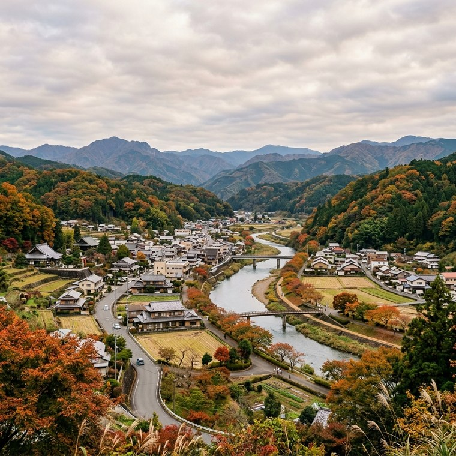
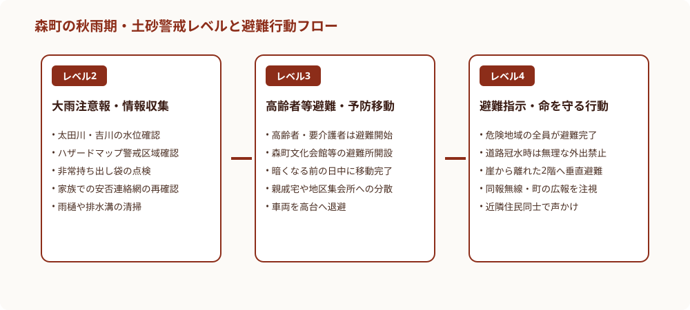
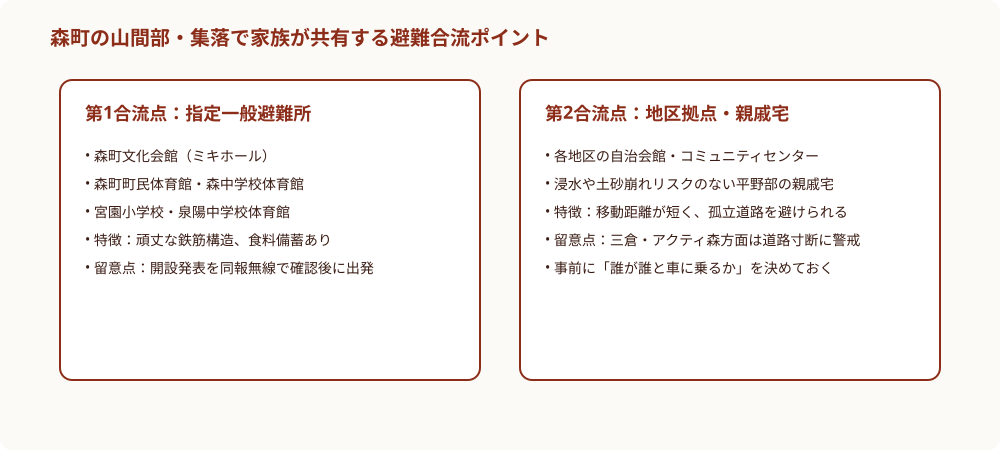

森町の土砂災害警戒区域と避難行動｜秋雨期に家族で決める合流点
2026年9月19日｜カテゴリ：防災・地域安全

この記事の要点
Q. 秋雨や台風で大雨が降ったとき、森町ではどこへどう避難すればいい？
森町は面積の約7割が山林であり、集落の多くが土砂災害警戒区域に隣接しています。豪雨時は『警戒レベル3（高齢者等避難）』の段階で、明るい昼間のうちに平野部の指定避難所（森町文化会館ミキホール等）や安全な親戚宅へ移動を完了させることが鉄則です。夜間の無理な移動を避け、家族で合流ポイントを事前合意しておく手順を解説します。
秋雨前線が停滞し、台風の発生が相次ぐ9月中旬から10月にかけては、森町全域において土砂災害や河川氾濫の危険性が年間で最も高まる警戒期間となります。豊かな山林と清らかな太田川・吉川に囲まれた遠州森町は、美しい自然環境の恩恵を享受している一方で、地形の約7割が急峻な山林地帯で占められており、集落の背後に土砂災害警戒区域（イエローゾーン）や特別警戒区域（レッドゾーン）が近接している場所が数多く存在します。
遠州森町で暮らす方や、実家が森町の山間部にあるご家族にとって、秋雨の季節における最大の課題は「いざという時に、どのタイミングで、どこへ避難し、家族がどこで落ち合うか」という具体的な合流計画の事前決定です。豪雨が本格化して夜間になってから慌てて車を出そうとしても、山道への倒木や小規模な土砂崩れ、用水路の越水によって道路が寸断され、かえって車ごと被災するリスクが極めて高くなります。
大石浩之（磐田市／不動産業）です。私は磐田市を拠点に介護事業や高齢者向け住宅を運営するとともに、遠州地方全域の不動産管理や実家じまい、空き家対策のお手伝いを長年続けております。森町にも数多くの管理物件やご相談いただく実家があり、地元の地勢や気候特性、そして山あいの集落特有の生活道路事情を肌身で実感してまいりました。災害対応の鉄則は『雨が降り始める前の平常時に、最悪の事態を想定して約束を決めておくこと』に尽きます。
前回の記事でも触れた通り、地域の安全や伝統行事を守るためには、住民同士の連携と一人ひとりの周到な準備が欠かせません。本稿では、静岡県森町が公表している土砂災害ハザードマップや避難所開設基準を踏まえ、秋の風水害シーズンに家族全員で共有しておくべき避難合流ポイントと行動指針を徹底的に整理します。
森町の地形的特徴と潜む土砂災害リスク
森町の地理的構造を理解する上で外せないのが、北部の三倉・葛布・問詰などの急峻な山岳地帯から、中央部の一宮・天宮・飯田を経て、南部の太田川下流へと至る高低差のある細長い地形です。山あいを縫うように流れる太田川、三倉川、吉川などの河川沿いに集落が形成されているため、局地的な集中豪雨に見舞われると、わずか数時間で斜面の地盤が緩み、土石流やがけ崩れが発生しやすい地質的脆弱性を抱えています。
特に注意しなければならないのは、森町内の多くの山林がスギやヒノキを中心とする人工林であり、近年の林業従事者減少に伴って手入れが十分に行き届いていない山林では、表土を支える根の緊縛力が低下している点です。大雨が降ると、大量の間伐材や流木が土砂とともに一気に沢を下り、下流の橋や暗渠を塞いで二次的な氾濫を引き起こす恐れがあります。
森町役場が発行している『森町土砂災害ハザードマップ』を確認すると、町内の多くの住宅が山裾に沿って指定されている土砂災害警戒区域に隣接していることが一目で分かります。自宅そのものがイエローゾーンに入っていなくても、唯一の避難経路である町道や県道が警戒区域を通過している場合、集落全体が孤立集落化してしまう孤立リスクを常に想定しておく必要があります。
過去の遠州地方の豪雨災害でも、道路冠水や倒木によって救助車両の進入が何日間も阻まれた事例が記録されています。孤立してから自衛隊や消防の救助を待つのではなく、道路が通行可能である『警戒レベル3』の段階で、山林部から平野部の安全な避難所へ予防避難することが、命を守る絶対の基本です。
警戒レベルと避難行動の正しい判断基準
気象庁や自治体から発表される『警戒レベル』には1から5までの明確な区分がありますが、森町のような山間地域においては、警報の文言を形式的に受け取るだけでは手遅れになる危険性があります。レベルごとの具体的な実務判断を以下のように整理しておくことが求められます。
警戒レベル1（早期注意情報）および警戒レベル2（大雨注意報・洪水注意報）の段階では、まずテレビの気象情報やスマートフォンアプリで森町のアメダス雨量、太田川の水位観測所の数値をこまめにチェックします。この段階で実家の雨樋の詰まりや排水枡の泥を掻き出し、非常持ち出し袋の賞味期限や懐中電灯の点灯を確認しておきます。
決定的な分岐点となるのが『警戒レベル3（高齢者等避難）』の発令です。一般的な都市部では『高齢者以外はまだ自宅にいてよい』と解釈されがちですが、森町の山裾や河川沿いに暮らす世帯においては、若い世代も含めて『この段階で全員が避難を開始する』という意識が不可欠です。なぜなら、警戒レベル4（避難指示）が出る頃には、外は激しい風雨と雷鳴で視界が遮られ、道路冠水や土砂流出によって自力移動が極めて困難になるからです。
特に高齢の親御さんや小さなお子様がいる家庭では、靴を履いて車に乗り込むだけでも健常者の何倍もの時間がかかります。足腰が弱っている親を夜間の暴風雨の中で移動させるのは、それ自体が転倒骨折や水難事故の引き金になりかねません。明るい昼間のうちに、雨足が強まる前のレベル3で移動を完了させることが何よりも大切です。
警戒レベル4（避難指示）が発令された段階で万一まだ自宅に残っており、周囲の道路がすでに冠水している、あるいは山鳴りや異臭などの異常現象を感じた場合は、無理に外へ出て避難所を目指してはいけません。屋外移動はかえって命を落とす危険があるため、建物の2階以上で、山側の斜面から最も離れた部屋へ移動する『垂直避難』に直ちに切り替えてください。

家族で決める2つの避難合流ポイント
災害時に家族が最も不安に陥るのは、『家族がそれぞれ別の場所にいて、連絡がつかない』という状況です。日中であれば、親は自宅、父親は町外の職場、母親は買い物、子どもは学校や保育園というように、家族全員がバラバラの地点にいます。災害が起きてから『どこへ逃げる？』と電話をかけようとしても、回線パンクや基地局の停電によって通話は一切繋がらなくなります。
そこで秋の穏やかな週末に必ず実行していただきたいのが、『避難合流ポイントの二重設定』です。第一候補と第二候補をあらかじめ家族全員で明確に約束しておきます。
第一合流ポイントとして設定すべきは、森町が指定する公的な『指定一般避難所』です。代表的な拠点としては、鉄筋コンクリート造で強固な耐震性を備えた『森町文化会館（ミキホール）』、敷地が広く収容能力の高い『森町町民体育館』『森中学校体育館』、そして北部方面の拠点を担う学校体育館などが挙げられます。これらの施設は物資の集積や行政職員の配置が優先されるため、最も確実な安全地帯となります。
ただし、指定避難所はすべての施設が一斉に開くわけではありません。雨の降り方や被害予測に応じて、森町災害対策本部が開設を判断します。同報無線や町公式LINE、安心安全メールで『〇〇避難所を開設しました』という正式発表を確認した上で向かう必要があります。
第二合流ポイントとして極めて有効なのが、『浸水・土砂災害リスクのない平野部にある親戚宅・友人宅』や『各地区の頑丈なコミュニティセンター』です。避難所のような大人数の集団生活が苦手な高齢者や、ペットを連れているご家庭では、平野部に暮らす親族の家を事前に頼りにしておく方が、プライバシーや精神衛生の面で圧倒的に負担が少なくなります。お互いに『台風の時はうちに来ていいよ』と日頃から声を掛け合っておくことが、強固なセーフティネットとなります。

良い点：地区コミュニティの共助と情報伝達の多重化
森町の地域防災体制を第三者の事業者目線で客観的に評価した際、私が大変優れていると感じる『良い点』は、各地区の自治会・自主防災組織の結束力が非常に固く、住民同士の『共助』が日頃のコミュニティ活動を通じて息づいていることです。
都市部では近隣住民の顔すら知らない希薄な人間関係が問題視されていますが、森町では町内会の寄り合いや秋の祭礼準備、消防団の活動などを通じて、どこの家に誰が住み、どこのお年寄りが一人暮らしをしているかを地域全体が正確に把握しています。豪雨が予想される際には、自治会長や組長、近隣の住民が『おばあちゃん、雨がひどくなる前に一緒に役場へ行こう』と自然に声を掛け合える土壌が残されています。
注文したい点：山間部個別計画の実効性と道路法面の総点検
また、森町役場による情報発信体制も着実に近代化されており、従来の屋外同報無線（スピーカー）が雨風で聞き取りにくいという課題に対し、戸別の防災ラジオの無償貸与や、スマートフォン向けの情報配信アプリ、LINE公式アカウントの活用など、情報伝達の多重化が着実に進められている点も高く評価できます。
その一方で、現場を歩き、空き家や高齢者世帯の相談を受ける立場から、森町の行政および地域社会に対して率直に改善を期待し『注文したい点』も存在します。それは、『山間部の孤立危険集落における個別避難計画の実効性向上』と『林道・生活道路の法面総点検の加速』です。
対案・結論｜平野部への事前分散避難ネットワークの構築
現在、法改正に伴って要配慮者ごとの『個別避難計画』の作成が進められていますが、実際の山間集落では担い手である若年層の流出が進み、『避難を支援する側の住民もまた70代の高齢者である』という認認避難・老老避難の限界に直面しています。紙の計画書を作るだけで満足せず、『実際に誰の軽トラックに乗せて、どの迂回路を通って避難所へ運ぶのか』という実践的な実地訓練を各集落で積み重ねる必要があります。
さらに、町道や林道沿いの法面には、長年の風雨で岩盤が脆くなっている箇所や、巨木が道路側に傾斜している危険箇所がまだまだ残されています。大規模な崩落が起きてから通行止めにするのではなく、ドローン等を活用した斜面の定期点検を強化し、大雨の前に危険な立木の事前伐採や防護ネットの補修を計画的に進めていただくことを強く要望します。
大石の視点｜土砂災害警戒区域と実家の住まい方選び
上記の課題を踏まえた私の『対案結論』は、行政による公助の限界を直視し、『平野部への事前分散避難』と『地域内マイクロ避難ネットワーク』を官民一体で構築することです。
森町の豊かな自然を守りながら安全に住み続けるためには、危険な斜面をコンクリートで完全に覆い尽くすような巨額のハード工事に依存することは財政的にも不可能です。むしろ、『雨が本格化する前日に、山間部の高齢者を町中心部の宿泊施設や公共施設、あるいは親族宅へ予防的に滞在させる』というソフト面の仕組みづくりにこそ投資すべきです。
今日できる確認手順
例えば、町内の民間ホテルや旅館、空き家バンクの改修物件などを『一時避難協力施設』として包括協定を結び、台風接近時には町が宿泊費の一部を補助して山間部住民の早期滞在を促すといった柔軟な枠組みが考えられます。住民が『避難所の体育館で冷たい床に雑魚寝するのは嫌だ』と躊躇する心理的ハードルを取り除くことが、結果として人的被害ゼロを達成する最も現実的で効果的な道筋であると確信します。
ここからは、日々不動産の取引や高齢者の住まい選びに向き合っている私、大石浩之の実感と視点をお話しします。実家じまいや不動産相続の現場において、土砂災害警戒区域の指定は、単なる防災上の記号にとどまらず、家族の資産価値や将来の生活設計に極めて大きな影響を与えます。
近年、ハザードマップの法的な重要性が格段に高まり、不動産売買の重要事項説明においても土砂災害警戒区域や浸水想定区域の説明が厳格に義務付けられました。レッドゾーン（土砂災害特別警戒区域）に指定された敷地では、将来建物を建て替える際に強固な擁壁の設置が義務付けられたり、建築基準法に基づく構造規制によって建築費用が跳ね上がったりするため、買い手がつかずに実家が塩漬けになってしまうケースが実際に増えています。
『この実家に親が一人で暮らし続けることは、災害リスクの面からも本当に安全なのだろうか』という疑問を持たれたなら、それは住まい方を見直す絶好の好機です。無理に山林の危険な家にしがみつくのではなく、元気なうちに森町中心部の平坦地や、磐田市などの利便性の高い地域にあるサービス付き高齢者向け住宅へ住み替えを行い、実家は現状のまま適切な形で処分・整理する。そうした選択肢を検討することは、親の安全と子どもの安心を同時に確保するための極めて前向きな防衛策と言えます。
秋の長雨や台風の襲来を前に、今日この週末にご家庭で直ちに実行できる具体的なアクションプランは以下の3ステップです。
よくある質問
森町の避難所は台風が近づいたら誰でもすぐに入れますか？
避難所は町役場が開設を決定・公表した後に利用可能となります。同報無線や町公式LINE・安心安全メールで開設状況を確認してから移動します。事前に鍵が開いているわけではない点に注意が必要です。
土砂災害警戒区域（イエローゾーン）に住んでいる場合、いつ避難すべきですか？
高齢者や要介護者がいる家庭はもちろん、一般家庭も『警戒レベル3（高齢者等避難）』が発令された段階で日中の明るいうちに避難を完了させるのが鉄則です。夜間の暴風雨下での移動は土砂崩れや冠水に巻き込まれる危険が高くなります。
避難所への移動が危険なほど大雨が悪化した場合はどうすればいいですか？
すでに周囲が冠水していたり土砂流出が始まっている場合は屋外への移動を中止し、自宅の2階以上で斜面から最も離れた部屋へ移る『垂直避難』を行って救助を待ちます。

参考にした公式情報
- 森町「森町土砂災害ハザードマップ」防災安全課（2026年9月19日確認）
- 森町「指定緊急避難場所・指定一般避難所一覧」防災安全課（2026年9月19日確認）
最終確認日：2026-09-19。計画・制度・避難所開設状況は変更される場合があります。最新情報は森町公式窓口へ、個別の法律・防災判断は担当機関や専門家へ確認してください。